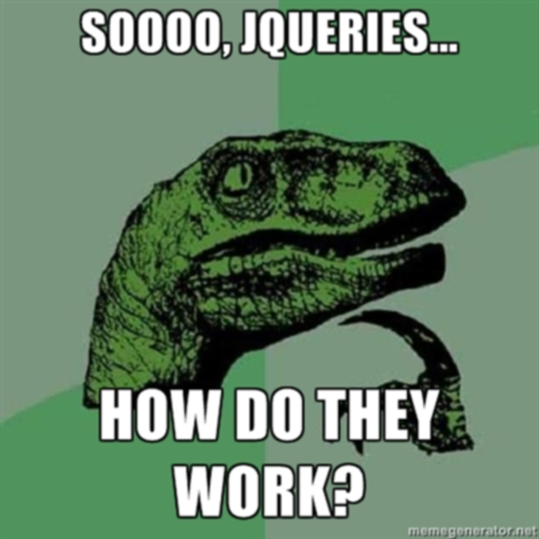

; // for saftey...

So who am I?
Some people call me the space cowboy...
Some call me the gangster of love...
Some call me that fluffy guy from Madagascar...
Most however call me Maurice Butler.
@butlermaurice
mauricebutler.wordpress.com
github.com/MauriceButler
Senior Analyst Programmer at Sunsuper
mauricebutler.wordpress.com
github.com/MauriceButler
Senior Analyst Programmer at Sunsuper
Credit where its due
Some of the concepts and the actual idea behind this presentation have beenblatantly stolen "borrowed" from a talk done by Jared Wyles (@rioter) at
DDDBrisbane last year.
Some of the concepts and the actual idea behind this presentation have been
intro.js
outro.js
(function( window, undefined ) {
// Use the correct document accordingly with window argument (sandbox)
var document = window.document,
navigator = window.navigator,
location = window.location;
core.js
outro.js
})( window );
core.js
// Define a local copy of jQuery
var jQuery = function( selector, context ) {
// The jQuery object is actually just the init constructor 'enhanced'
return new jQuery.fn.init( selector, context, rootjQuery );
}
Sanity Checks
// Handle $(""), $(null), or $(undefined)
if ( !selector ) {
return this;
}
// Handle $(DOMElement)
if ( selector.nodeType ) {
this.context = this[0] = selector;
this.length = 1;
return this;
}
// The body element only exists once, optimize finding it
if ( selector === "body" && !context && document.body ) {
this.context = document;
this[0] = document.body;
this.selector = selector;
this.length = 1;
return this;
}
Check for HTML strings
// A simple way to check for HTML strings or ID strings
quickExpr = /^(?:[^#<]*(<[\w\W]+>)[^>]*$|#([\w\-]*)$)/
// Are we dealing with HTML string or an ID?
if ( selector.charAt(0) === "<" && selector.charAt( selector.length - 1 ) === ">" && selector.length >= 3 ) {
// Assume that strings that start and end with <> are HTML and skip the regex check
match = [ null, selector, null ];
} else {
match = quickExpr.exec( selector );
}
Id without context
// HANDLE: $("#id")
elem = document.getElementById( match[2] );
if ( elem && elem.parentNode ) {
// Handle the case where IE and Opera return items
// by name instead of ID
if ( elem.id !== match[2] ) {
return rootjQuery.find( selector );
}
// Otherwise, we inject the element directly into the jQuery object
this.length = 1;
this[0] = elem;
}
this.context = document;
this.selector = selector;
return this;
Most selectors end up here
if ( !context || context.jquery ) {
return ( context || rootjQuery ).find( selector );
// HANDLE: $(expr, context)
// (which is just equivalent to: $(context).find(expr)
} else {
return this.constructor( context ).find( selector );
}
The reason most people use jQuery...
Tags and Class selectors
// See if we find a selector to speed up
var match = /^(\w+$)|^\.([\w\-]+$)|^#([\w\-]+$)/.exec( query );
if ( match && (context.nodeType === 1 || context.nodeType === 9) ) {
// Speed-up: Sizzle("TAG")
if ( match[1] ) {
return makeArray( context.getElementsByTagName( query ), extra );
// Speed-up: Sizzle(".CLASS")
} else if ( match[2] && Expr.find.CLASS && context.getElementsByClassName ) {
return makeArray( context.getElementsByClassName( match[2] ), extra );
}
}
Everything else
try {
return makeArray( context.querySelectorAll(query), extra );
} catch(qsaError) {}
Or not...

if (!document.querySelectorAll)
var chunker = /((?:\((?:\([^()]+\)|[^()]+)+\)|\[(?:\[[^\[\]]*\]
|['"][^'"]*['"]
|[^\[\]'"]+)+\]|\\.|[^ >+~,(\[\\]+)+
|[>+~])(\s*,\s*)?((?:.|\r|\n)*)/g,
Eventualy it becomes...
do {
chunker.exec( "" );
m = chunker.exec( soFar );
if ( m ) {
soFar = m[3];
parts.push( m[1] );
if ( m[2] ) {
extra = m[3];
break;
}
}
} while ( m );
Here is where is gets interesting
ret = seed ?
{ expr: parts.pop(), set: makeArray(seed) } :
Sizzle.find( parts.pop(),
parts.length === 1 && (parts[0] === "~" || parts[0] === "+")
&& context.parentNode ? context.parentNode : context,
contextXML );
OK, now lets find something
Sizzle.find = function( expr, context, isXML ) {
// ...
for ( i = 0, len = Expr.order.length; i < len; i++ ) {
type = Expr.order[i];
if ( (match = Expr.leftMatch[ type ].exec( expr )) ) {
left = match[1];
match.splice( 1, 1 );
if ( left.substr( left.length - 1 ) !== "\\" ) {
match[1] = (match[1] || "").replace( rBackslash, "" );
set = Expr.find[ type ]( match, context, isXML );
if ( set != null ) {
expr = expr.replace( Expr.match[ type ], "" );
break;
}
}
}
}
// ...
}
Simple function for this case
TAG: function( match, context ) {
if ( typeof context.getElementsByTagName !== "undefined" ) {
return context.getElementsByTagName( match[1] );
}
}
Walk the DOM
"": function(checkSet, part, isXML){
var nodeCheck,
doneName = done++,
checkFn = dirCheck;
if ( typeof part === "string" && !rNonWord.test( part ) ) {
part = part.toLowerCase();
nodeCheck = part;
checkFn = dirNodeCheck;
}
checkFn( "parentNode", part, doneName, checkSet, nodeCheck, isXML );
},
Still Walking
function dirCheck( dir, cur, doneName, checkSet, nodeCheck, isXML ) {
for ( var i = 0, l = checkSet.length; i < l; i++ ) {
var elem = checkSet[i];
if ( elem ) {
var match = false;
elem = elem[dir];
while ( elem ) {
if ( elem[ expando ] === doneName ) {
match = checkSet[elem.sizset];
break;
}
if ( elem.nodeType === 1 ) {
if ( !isXML ) {
elem[ expando ] = doneName;
elem.sizset = i;
}
if ( typeof cur !== "string" ) {
if ( elem === cur ) {
match = true;
break;
}
} else if ( Sizzle.filter( cur, [elem] ).length > 0 ) {
match = elem;
break;
}
}
We now have a giant stack of elements
Filter
Sizzle.filter = function( expr, set, inplace, not ) {
// Long boring code we have already seen...
return result;
}
Ding!

Take away
- Limit the amount selectors have to walk the DOM
- Use Id or Class selectors where possible
- Avoid Decentdant (space) Selectors
- Pass a context
- Ensure your right most selector is as specific as possible
- Use the browser optimised selectors
- Keep your DOM shallow
- Only query when you need to, cache the result
@butlermaurice
mauricebutler.wordpress.com
github.com/MauriceButler
Senior Analyst Programmer at Sunsuper
mauricebutler.wordpress.com
github.com/MauriceButler
Senior Analyst Programmer at Sunsuper